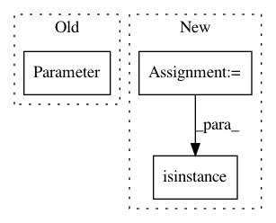

704f1ab10f28a9fe3ae76e4cf1eb6ea946db01cd,torch_geometric/nn/modules/spline_conv.py,SplineConv,__init__,#SplineConv#Any#Any#Any#Any#Any#Any#Any#Any#,32
Before Change
if root_weight:
root_weight = torch.Tensor(in_channels, out_channels)
self.root_weight = Parameter(root_weight)
else:
self.register_parameter("root_weight", None)
if bias:
After Change
kernel_size = torch.tensor(kernel_size, dtype=torch.long)
self.register_buffer("kernel_size", kernel_size)
if isinstance(is_open_spline, numbers.Number):
is_open_spline = list(repeat(is_open_spline, dim))
is_open_spline = torch.tensor(is_open_spline, dtype=torch.uint8)
self.register_buffer("is_open_spline", is_open_spline)
In pattern: SUPERPATTERN
Frequency: 3
Non-data size: 3
Instances
Project Name: rusty1s/pytorch_geometric
Commit Name: 704f1ab10f28a9fe3ae76e4cf1eb6ea946db01cd
Time: 2018-05-23
Author: matthias.fey@tu-dortmund.de
File Name: torch_geometric/nn/modules/spline_conv.py
Class Name: SplineConv
Method Name: __init__
Project Name: cornellius-gp/gpytorch
Commit Name: 9a965a05c88258475a6dd00441e2c0b856a8c54d
Time: 2017-08-05
Author: gpleiss@gmail.com
File Name: gpytorch/parameters/bounded_parameter.py
Class Name: BoundedParameter
Method Name: __init__
Project Name: GPflow/GPflow
Commit Name: 8562503b32a22c0c364474b46a53a959b6373a64
Time: 2020-10-08
Author: st--@users.noreply.github.com
File Name: gpflow/inducing_variables/inducing_variables.py
Class Name: InducingPointsBase
Method Name: __init__